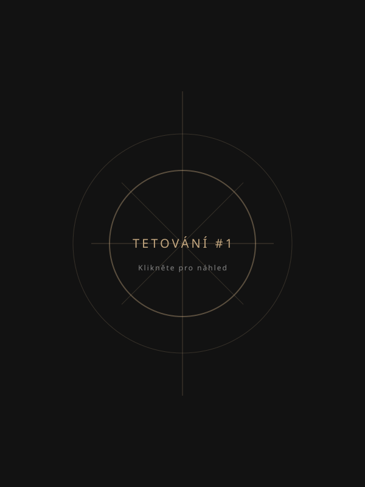
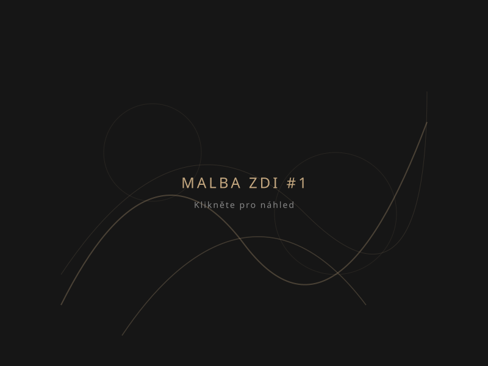
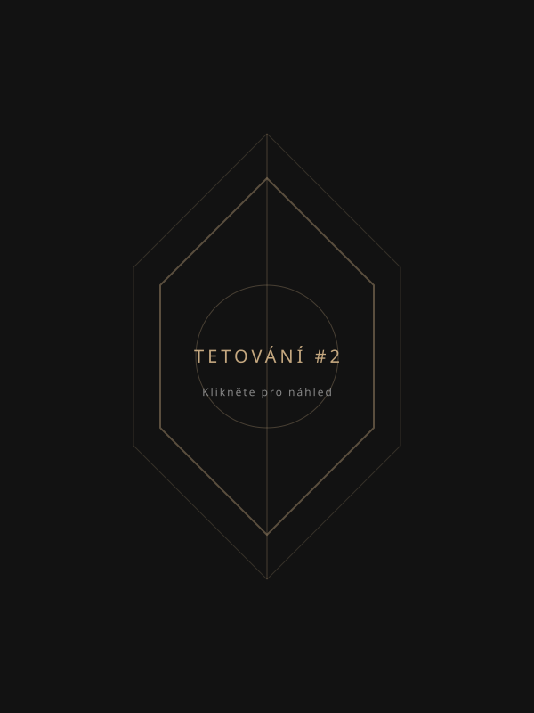
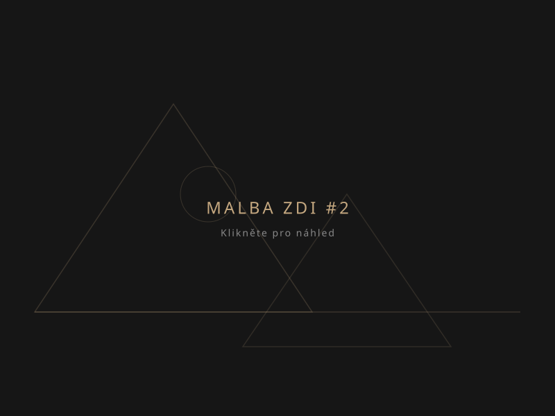
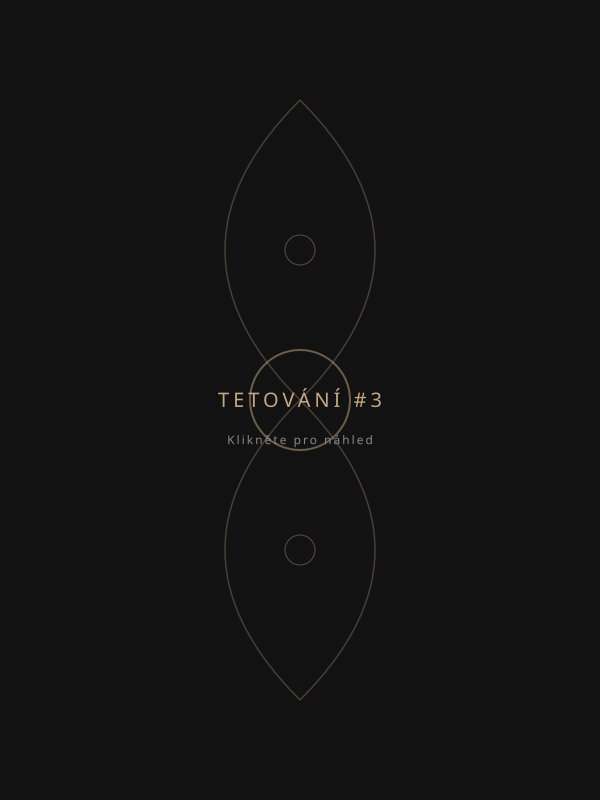
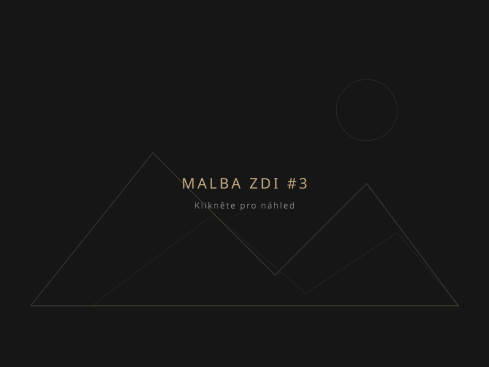

Tattoo & Fine Art
„Tetování není jen ozdoba – je to umění života vepsané do kůže.“
Jmenuji se Jana a věnuji se tetování i umělecké malbě zdí. Tvoření je pro mě způsob, jak proměňovat nápady, příběhy a emoce v originální díla, ať už na kůži nebo v prostoru kolem nás.
Jako začínající tatérka přistupuji ke každému motivu s maximální pečlivostí a respektem. Věřím, že tetování by mělo být jedinečné stejně jako člověk, který ho nosí. Proto každý návrh vytvářím individuálně a na míru, aby co nejlépe vystihl osobnost, myšlenku nebo vzpomínku svého nositele.
Zakládám si na poctivé práci, otevřené komunikaci a důrazu na detail. Mým cílem není jen vytvořit obrázek, ale originální dílo, které bude mít pro svého majitele skutečný význam.
Prohlédněte si portfolio mých autorských prací. Pro zobrazení detailu klikněte na libovolný obrázek.






Obrázky v galerii jsou momentálně zástupné. Pro vložení vlastních děl jednoduše nahraďte soubory ve složce images/.
Každému projektu, ať už jde o drobnost na kůži nebo velkou stěnu, věnuji stejnou dávku energie a umělecké vášně.
Originální tetování vytvořené speciálně pro vás. Přetvářím vaše osobní nápady, vzpomínky a sny do trvalých děl na kůži s důrazem na čisté linie a stínování.
Nemáte jasnou představu? Společně probereme vaše nápady a já vám nakreslím unikátní autorský návrh na míru, který bude odpovídat vaší osobnosti a anatomii těla.
Máte starší nebo nepovedené tetování, které už nechcete? Pomohu vám ho citlivě a kreativně předělat či zakrýt novým motivem, který na kůži rádi ukážete.
Oživte svůj domov, studio nebo firemní prostory. Navrhuji a ručně maluji velkoplošné designy přímo na stěny. Vytvářím atmosférická díla, která dodají prostoru duši.
Průběh od první myšlenky až po finální péči o zhojené dílo. Celým procesem vás provedu krok za krokem.
Nejprve se spojíme online nebo se sejdeme osobně. Probereme vaši představu, umístění, velikost, styl a motiv tetování.
Na základě našich podkladů nakreslím originální autorský návrh přímo pro vaše tělo a zašlu vám ho k prvnímu nahlédnutí.
Společně doladíme detaily návrhu. Vaše maximální spokojenost s výsledným motivem je pro mě prioritou před samotnou realizací.
V dohodnutý den se sejdeme v čistém, bezpečném a přátelském prostředí studia, kde motiv přeneseme na kůži a provedeme samotné tetování.
Po dokončení tetování vám vysvětlím, jak o kůži správně pečovat. Dostanete ode mě ochrannou folii a podrobný návod k hojení.
Kvalitní výsledek závisí z 50 % na samotném tetování a z 50 % na vaší následné péči. Zde jsou základní kroky pro perfektní zhojení.
Zhojené tetování vždy (i po letech) chraňte před přímým sluncem opalovacím krémem s vysokým faktorem SPF 50. Sluneční paprsky rozkládají tetovací inkoust a způsobují blednutí barev.
Máte dotazy, chcete zkonzultovat svůj nápad nebo si rovnou zarezervovat termín? Neváhejte mi napsat nebo zavolat.
Pod Záhorskem 560/9, 301 00 Plzeň